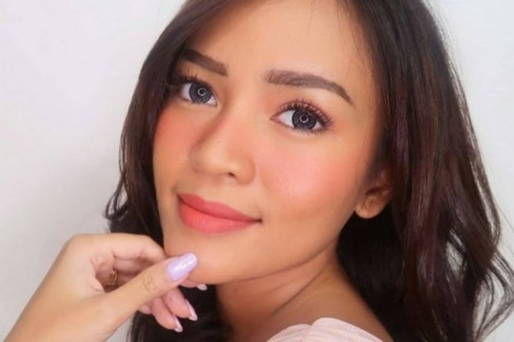
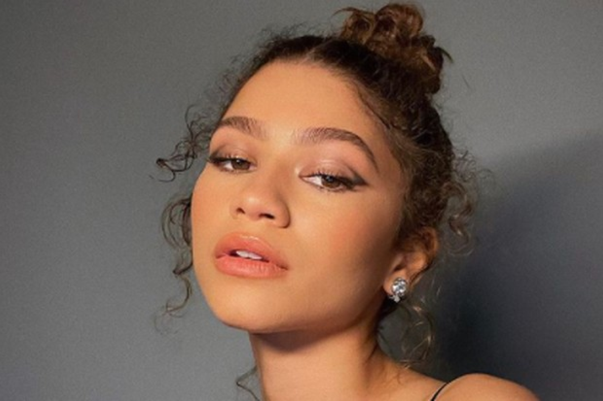

2. Kulit Kuning Langsat

Pemilik warna kuning langsat cenderung memiliki undertone kuning yang hangat. Warna kulit ini biasanya dimiliki oleh orang dari Asia, tidak terkecuali dari Indonesia.
Nah, untuk warna kulit ini, agar kecantikanmu lebih terpancar maka kamu bisa memilih blush on berwarna peach, coral, atau soft fuchsia. Warna-warna tersebut akan menyatu dengan rona alami kulitmu dan mampu memberi efek glowing sehingga wajah tidak terlihat kusam. Jika kamu ingin mengenakan riasan untuk tema glam dan bold, kamu bisa coba memilih warna plum dengan sentuhan shimmer agar senyum manismu menjadi lebih sempurna.

3. Kulit Sawo Matang
Pemilihan blush on untuk kulit sawo matang cukup berbeda dengan warna skin tone lainnya. Warna kulit cokelat yang tidak terlalu gelap akan cocok dipadukan dengan blush on berwarna rose, mauve, atau peach kecoklatan. Selain itu, pemberian warna bronze juga bisa memberi dimensi di wajah sekaligus membuatnya lebih merona.
Kamu perlu ingat, hindari warna-warna terlalu cerah seperti baby pink, karena warna tersebut bisa membuat penampilanmu tampak tidak natural dan tidak menyatu dengan skin tone kamu.
Back to categories
Back to our articles